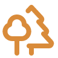
Bosque y senderos
Caminatas guiadas por bosque valdiviano, cascadas y miradores.
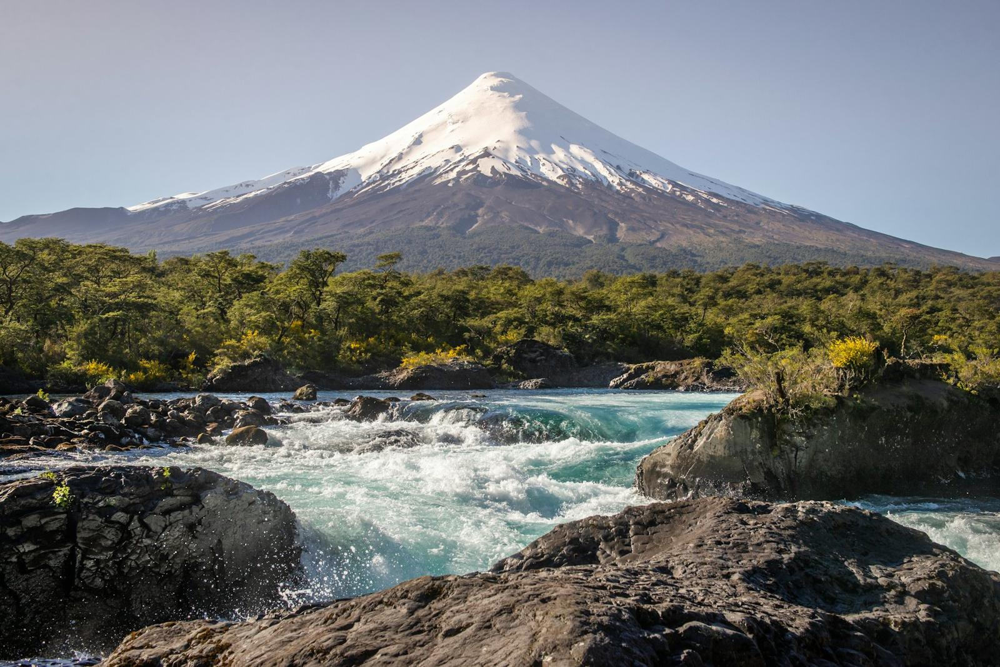
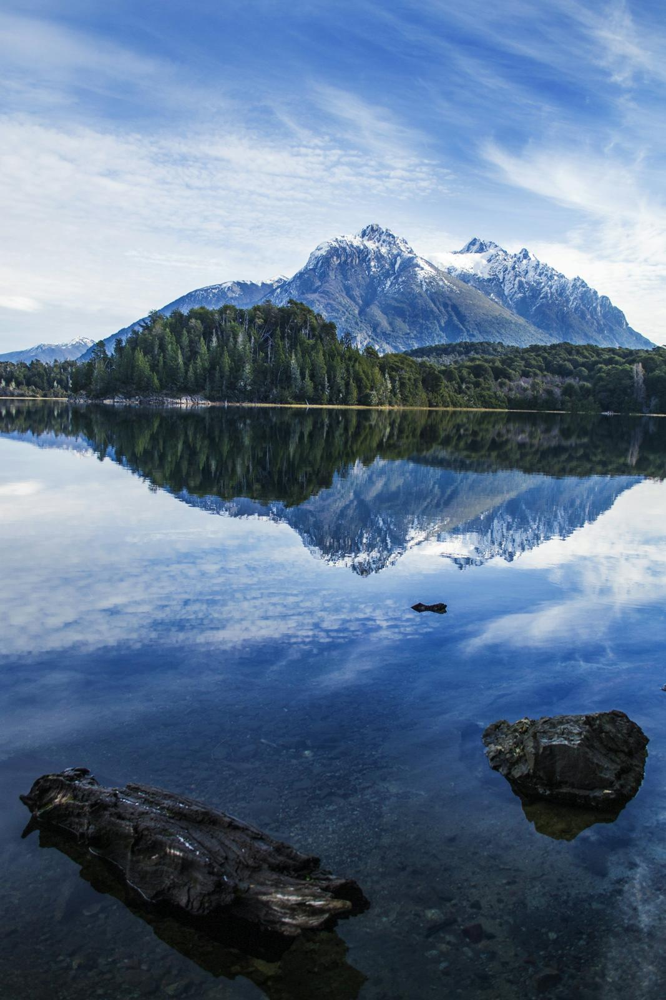
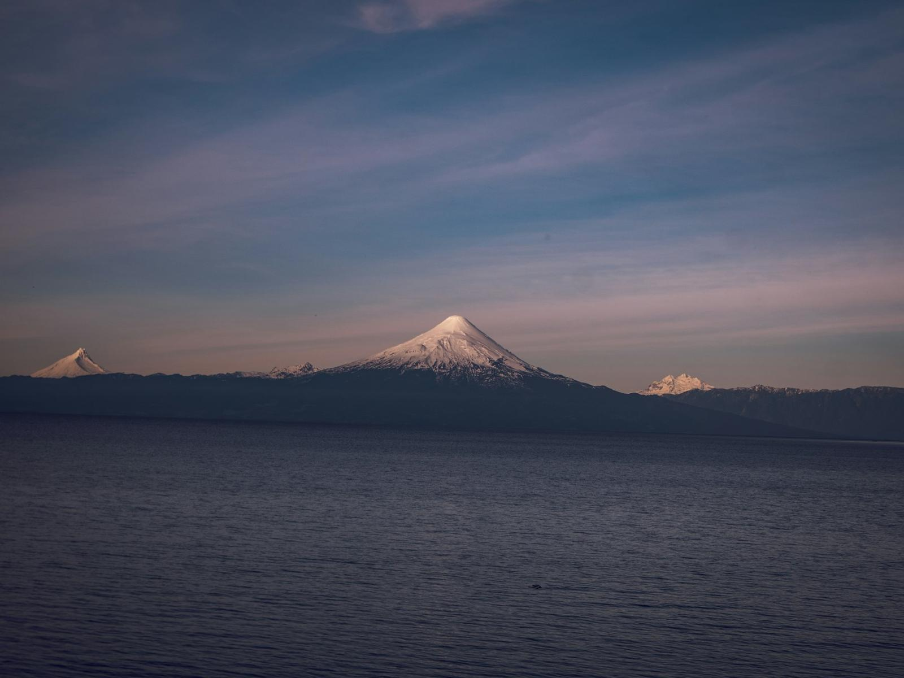
Viajes guiados a lagos, volcanes, termas y bosques del sur. Tú eliges el paisaje; nosotros nos encargamos del resto.
Diseñamos escapadas por el sur de Chile y la Patagonia argentina con guías locales, grupos pequeños y rutas pensadas para disfrutar cada parada sin correr.
Coordinamos traslados, alojamiento, entradas y cruces fronterizos para que tú solo te preocupes de mirar por la ventana.
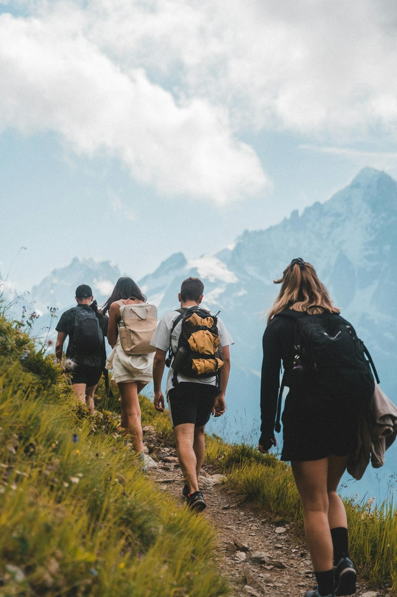
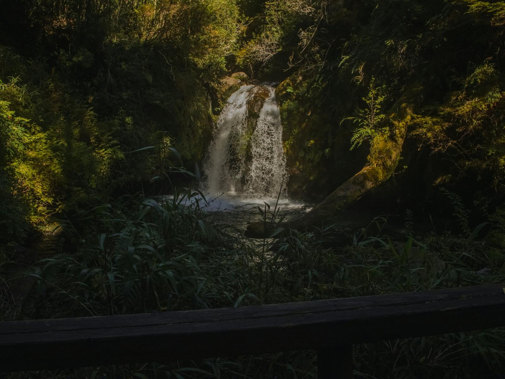
Combinamos actividades según tu ritmo: desde una caminata suave hasta un cruce de cordillera de varios días.

Caminatas guiadas por bosque valdiviano, cascadas y miradores.
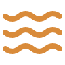
Paseos en lancha y catamarán por lagos de origen glaciar.
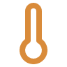
Aguas termales rodeadas de montaña para bajar el ritmo.
Esquí en invierno y trekking volcánico en verano.
Propuestas base que ajustamos según fecha, cantidad de viajeros y alojamiento disponible.
Valores referenciales de demostración. La cotización final depende de temporada, disponibilidad y tamaño del grupo.
Fechas, cuántos viajan y qué te gustaría vivir.
Itinerario, alojamiento y valor detallado en 24 horas.
Confirmamos cupos, entradas y traslados.
Te acompañamos antes, durante y después del viaje.
El sur cambia con cada estación. Esta guía te ayuda a elegir el mejor momento según lo que quieras vivir.
Días largos, lagos navegables y senderos abiertos. Temporada alta: reserva con anticipación.
Demanda altaBosques rojizos, menos visitantes y la mejor época para termas y fotografía.
Demanda mediaNieve en Antillanca y Cerro Catedral. Ideal para esquí y escapadas con fuego a leña.
Demanda alta en vacacionesSaltos con más caudal, flores nativas y buenos precios antes del verano.
Demanda baja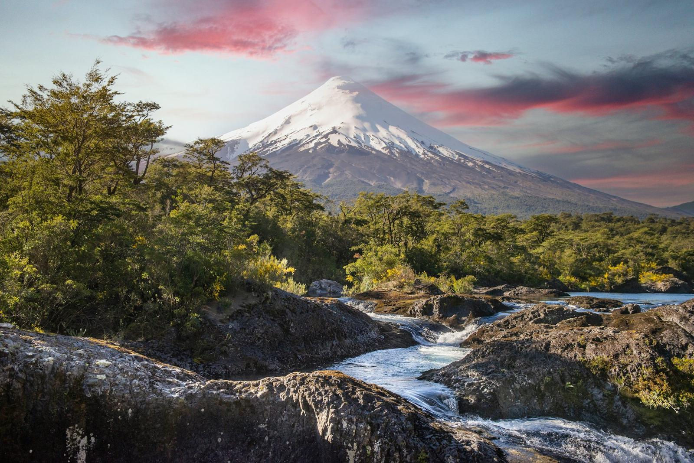
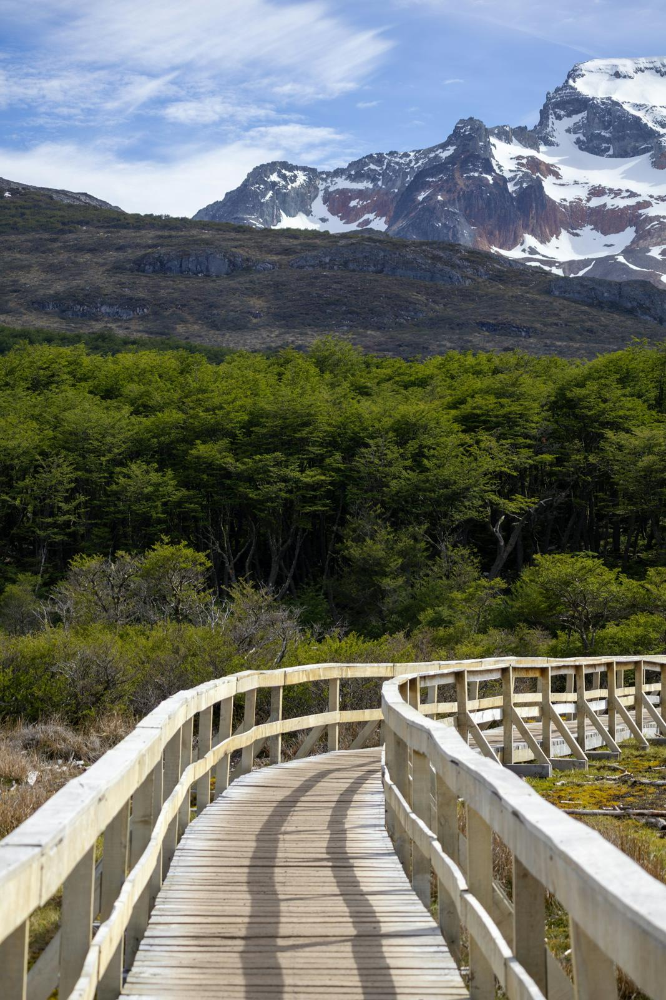
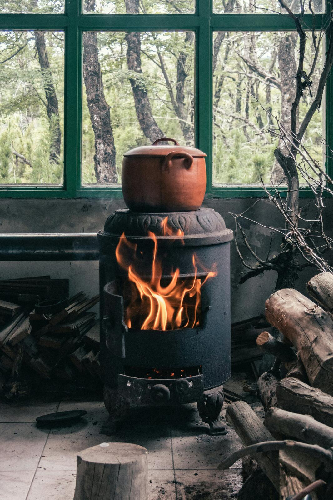
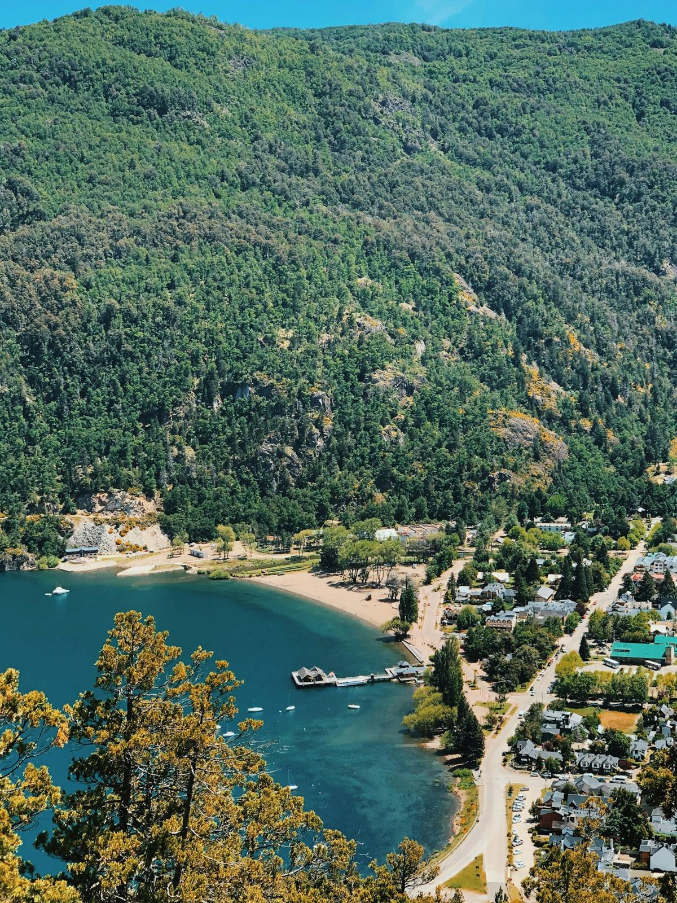
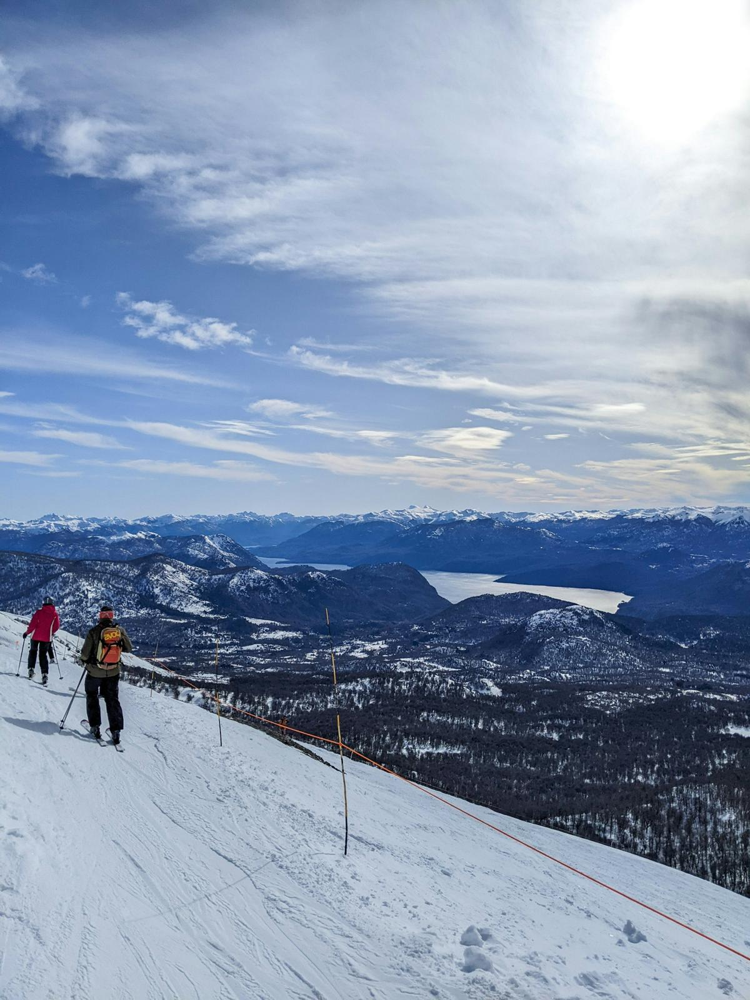
¿Tienes otra duda? Escríbenos y te respondemos el mismo día.
Hacer una consultaLas excursiones en Chile salen desde Puerto Varas u Osorno. Los viajes a Argentina incluyen el cruce por el paso Cardenal Samoré o Mamuil Malal.
Cédula de identidad o pasaporte vigente. Menores de edad requieren autorización notarial si no viajan con ambos padres. Te enviamos la lista completa al reservar.
En el sur la lluvia es parte del paisaje. Adaptamos el itinerario y, si una actividad no es segura, la reprogramamos o te ofrecemos una alternativa.
Con un abono del 30% por transferencia y el saldo hasta 7 días antes de viajar. Este sitio es de demostración y no procesa pagos.
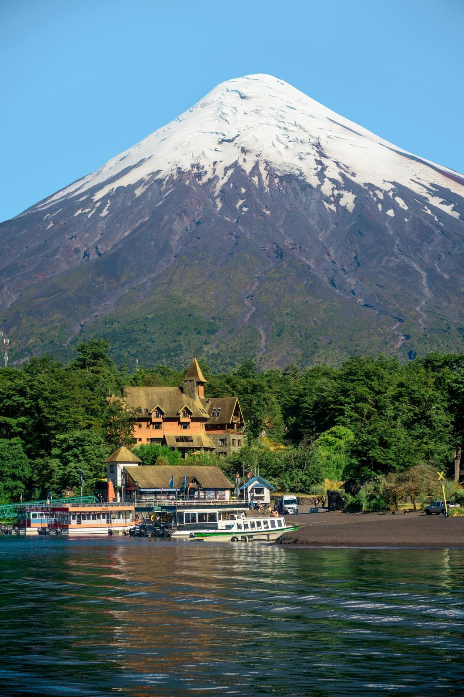
Tu próxima escapadaEscríbenos con tus fechas y armamos una propuesta para ti o tu grupo, sin compromiso.